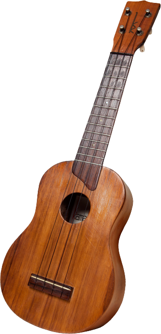
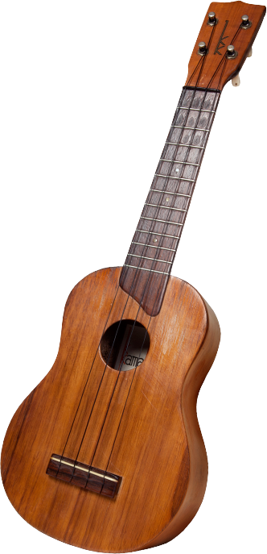

Join the world’s LARGEST ukulele lesson and let’s set the record!
Saturday May 26th, 2012, 2:30pm
at the gazebo in Welles Park
2333 West Sunnyside Avenue, Chicago, IL
We need you to help us break the Guiness World Record for the largest number of `ukulele players in one place (currently 1,378) and establish the record for the only group assembled to play a traditional Hawaiian song.
This all-ages event begins with a FREE lesson, so it’s perfect for beginners and advanced players alike. All you need is an `ukulele and the desire to make a little history! Bring your music-loving friends along, too. By the end of the lesson they’ll be able to strum “E Huli Mākou” and help us all make the Guiness Book.
We will begin assembling at 1:30pm near the gazebo and the lesson starts at 2:30pm sharp.
 
